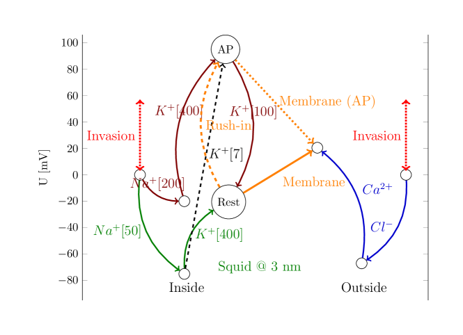
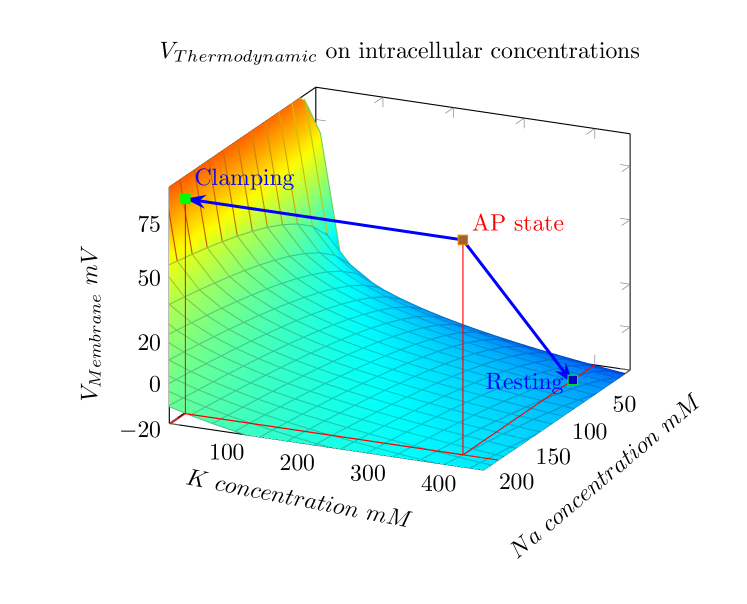

Figure 4.2 shows the changes that occur in a neuron that is displaced from its equilibrium state. These processes are naturally slow, their role in the transient process is discussed in the transient state section, here we only illustrate our statements regarding the current. Our statement is essentially based on Kirchhoff’s Voltage Law, according to which the sum of the voltages in a closed circuit is zero. In our case, the circuit extends from the inside of the neuron to the external environment. If for any reason the external and internal potential levels are not the same, then a current flows until they are equalized (current carries charge and causes a potential change; it is not an ideal voltage generator). Of course, the equalization is not instantaneous, the current has a time dependence.
On both the left and right sides of the figure, the resting potential level is at the zero value of the vertical scale. In the resting state (without invasion), in the intracellular segment the [Na50,K400] concentrations are present inside the cell. Using these values, we reach the ”Rest” state along the green arrows (based on the Nernst voltages, see 3.1 Table), which is located at a height of . On the right side, in the extracellular segment, from the point also at a height of 0, we arrive at a point at a height of along the blue arrows in the same way. The potential difference between the two mentioned points is , which HH measured (see section 2.8.5). It is a correct value, but it is the result of an electrostatic charging and not of a voltage drop due to the ”leakage current” they assumed. The voltage across the membrane (represented by the solid orange arrow) points upwards, preventing positive ions in the intracellular space from moving towards the extracellular space and preventing negative ions in the extracellular space from moving towards the intracellular space. The ions in the extracellular segment, however, are permeable, requiring continuous pumping. There is no potential difference between the outside and inside, so no (significant) current flows.
If, for any reason, the membrane voltage suddenly rises above the threshold value, due to an extremely fast influx, the membrane potential increases by about (a [Na200,K400] state occurs, see the brown arrows), i.e. the neuron jumps into the AP bubble. The orange arrow that was pointing upwards now points downwards as a broken line: the outflow of positive ions (both and ) is given a free path, but the sloping path for ions is eliminated. However, the free ions in the surface layer of the membrane are the vast majority of the ions that have just arrived, so the ion current through the AIS mainly consists of such ions. A significant increase in the membrane voltage leads to a significant increase in the potential of the inner space of the neuron. A current is initiated that tries to restore the initial voltage and concentration relationships. The extracellular environment of the membrane is extremely stable (the concentrations do not change), but inside the cell the voltage increases to the same extent, in the direction of ”Invasion”. The membrane potential has changed significantly due to the change in the concentration, so the cell then moves them towards equilibrium.

In the case of natural AP, there is no obstacle for the neuron to restore its previous state by changing any parameter, so the system concentrations start towards the state [Na50,K400]. This can be easily achieved by trying to make Na[50] from Na[200], while is still/already at the appropriate concentration. That is, it releases (mainly) ions through the AIS until the potential difference drops to zero. Reducing the concentration also reduces the membrane voltage, i.e. after the release of the excess ions (admitted during the rush-in) the neuron returns to its initial state; a cycle takes place.
In the classic experiment of HH, clamping means that the left-hand ”Invasion” suddenly raises the membrane voltage to the peak value measured at AP, without the concentrations changing, so the voltage of the left-hand segment will also be higher. The current only stops when the difference in the Nernst voltages of the inner segments equalizes the clamping voltage. Due to the slowness of charge carriers, the process is not instantaneous. ”Clamping” (see section 2.4.7) fixes the membrane voltage, meaning that the neuron cannot restore its initial resting state. Instead, it has to find a new balance by changing the concentrations. After the artificial AP, clamping (using a negative feedback) keeps the membrane potential at a fixed value, so the neuron can only produce a new balance by changing the ion concentrations: a current flows until the Nernst voltages of the and concentrations can balance the clamping voltage. From this [Na50,K400] state, the neuron has to adjust the potential so that the sum of the Nernst voltages plus the membrane’s voltage plus the clamping voltage is zero (so another balance has to be set!), while the voltage is fixed. To do this, it must reduce the concentration, while the concentration is already at a good value (the opposite of the previous case). And not by a small amount: [K7] only causes a voltage change equal to the clamping 100 mV imposed on the cell. This voltage is given by the resultant of the green curved and the black dashed straight path. The neuron can achieve this [Na50,K7] concentration by starting an intensive release.
Another important difference compared to the natural case is that there is no electrostatic acceleration across the membrane (which is why the influx stopped), only a thermodynamic suction effect outwards due to clamping. Indeed, ions attempt flow out through the membrane, but they cannot exit until the electric potential drops below the equivalent thermodynamic driving force of the concentration. Moreover, the nearby ions get there sooner, but they leave a gap (reduced concentration) behind them, where the nearby neighbor electrodiffuses. This is why the physiologist sees a ”delayed current”. It is a strange game of nature that the resultant of the thermodynamic and the electric (plus the elastic) gradients moves, simultaneously, the ions parallel to the membrane surface, toward the AIS, and the ions perpendicular to the surface toward the membrane, approximately until the peak of the action potential voltage is reached. The starts to leave through the AIS, while the ”excessive” ions leave through the membrane. The two currents do not flow in the same path, so they cannot interfere as currents in opposite directions and cannot cause hyperpolarization. Hyperpolarization is caused by the reversal of the current, which can be interpreted in the electrical sense as the capacitive current of the capacitor in the serial circuit, and in the mechanical sense as the negative period of the elastic membrane oscillation.
That is, the current is an artifact caused by the clamping, which is caused by the ’clamping’ measurement conditions, and does not occur in the neuron under natural conditions. This is where the urban legend ” flows out through the membrane in the second phase of AP, with a significant delay compared to the influx” comes from. It is really a good measurement, it is really ion, but HH and their late descendants did not measure what they thought. So there is no question of specific and (synchronized with each other) channels: in both cases, the concentration and potential relationships decide what ions flow and in which direction.

Fig. 4.3 shows a pictorial summary of the process. The points on the surface give the Nernst voltage acting on the ions, for different combinations of ion concentrations. The points on the surface are in equilibrium. The onset of the AP moves the point that was in equilibrium before well outside the surface. The neuron can find the new equilibrium position without the forcing effect of clamping by restoring the parameters of the previous state. In the case of clamping, it must set new concentrations at which the sum of the Nernst voltages can counteract the clamping voltage. In both cases, a relaxation process takes place, which in the case of the native process is measured by physiology as AP.